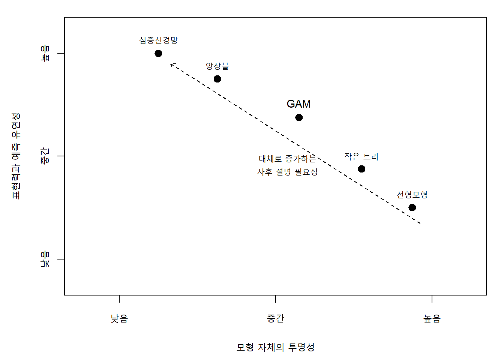
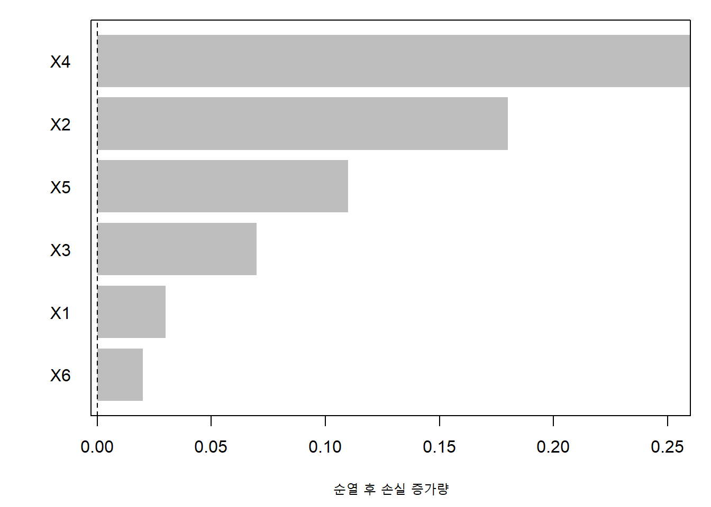
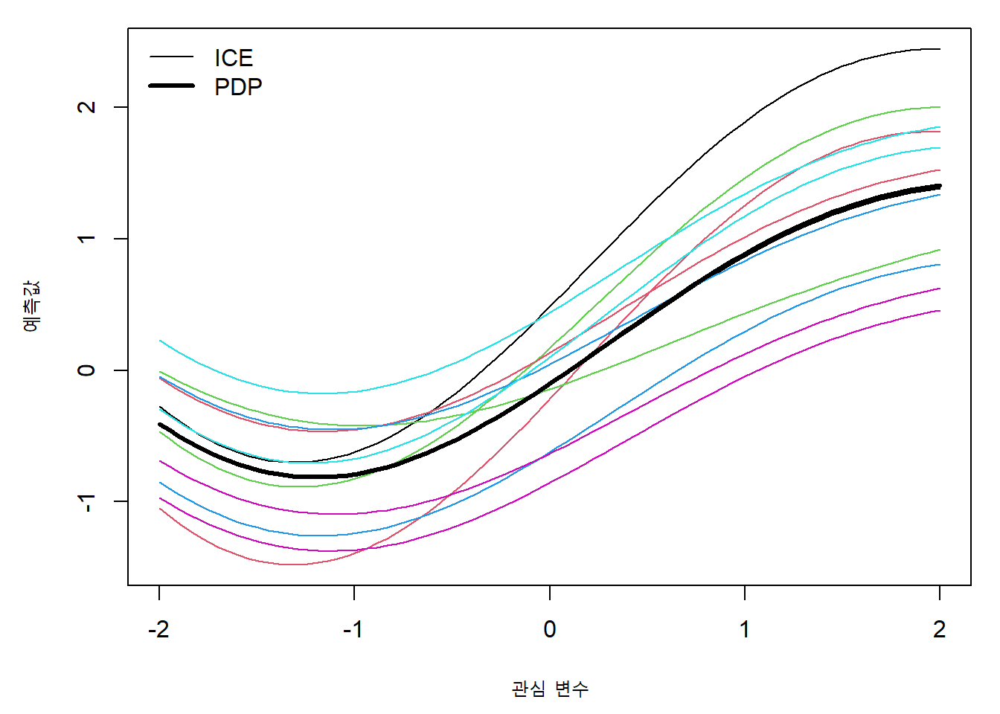
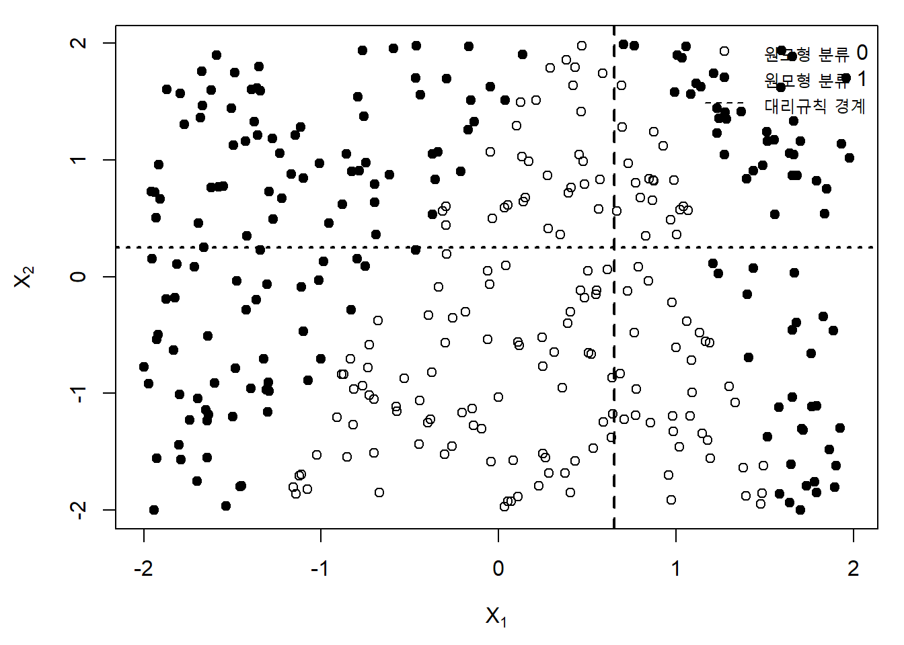
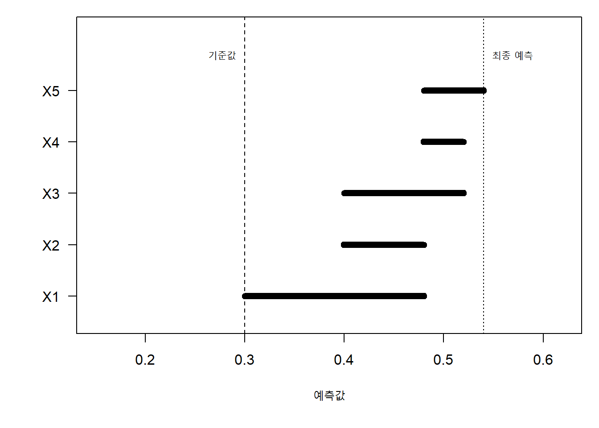
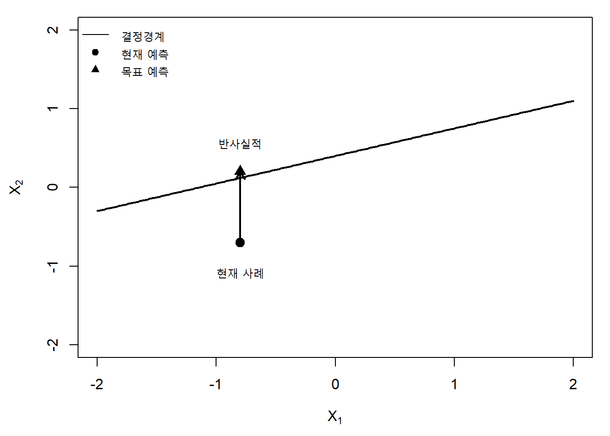
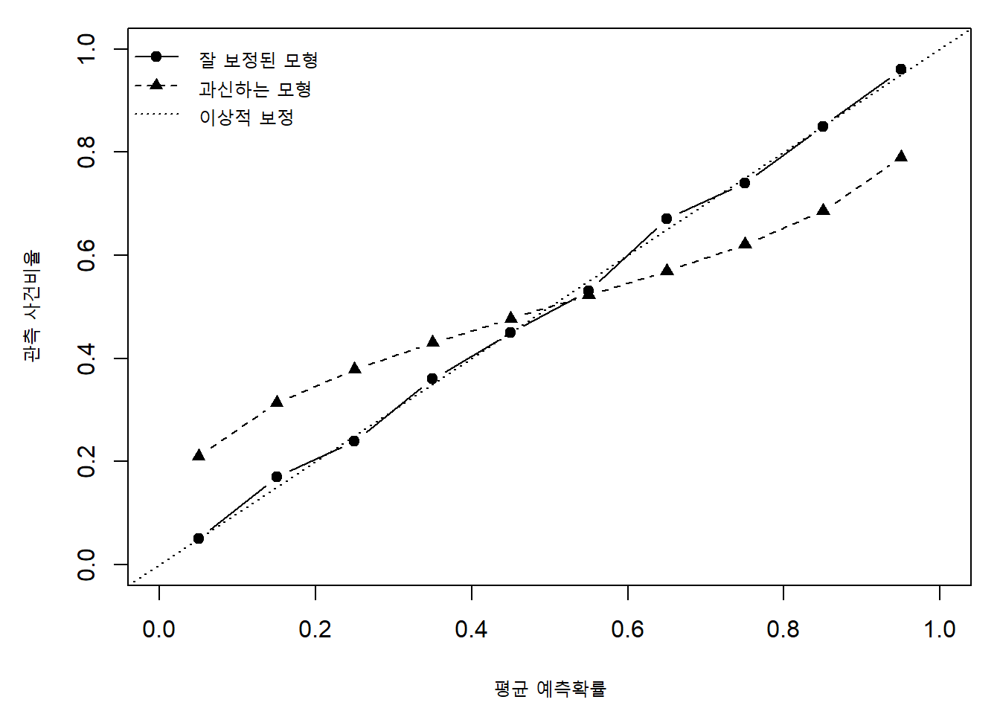
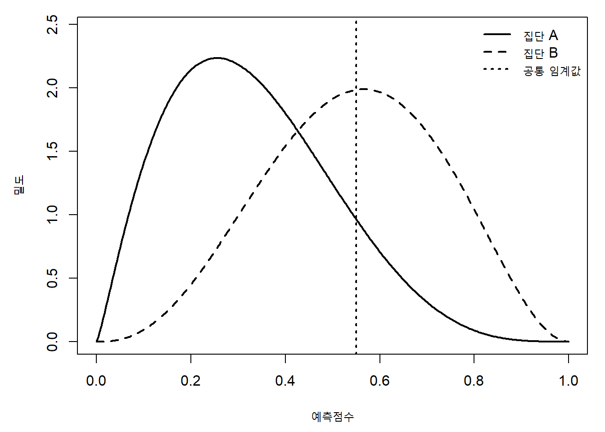
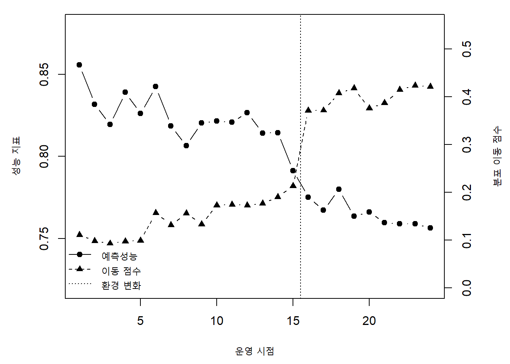

17 설명 가능한 머신러닝과 신뢰할 수 있는 예측
머신러닝 모형은 높은 예측성능만으로 충분하지 않은 경우가 많다. 의료, 금융, 공공정책, 제조, 교육과 같은 분야에서는 모형이 왜 특정 예측을 생성했는지 설명할 수 있어야 하며, 예측확률이 실제 위험과 일치하는지, 특정 집단에 체계적으로 불리한 결과를 만들지 않는지, 시간이 지나도 성능이 유지되는지 확인해야 한다. 이러한 요구는 해석 가능성, 설명 가능성, 확률 보정(probability calibration), 불확실성 정량화, 공정성, 강건성, 분포 이동 탐지와 모니터링을 하나의 통합된 문제로 만든다.
설명 가능한 머신러닝은 단순히 복잡한 모형을 그림으로 보여주는 기술이 아니다. 설명의 대상, 설명을 요구하는 사람, 설명이 사용될 의사결정 상황, 허용할 수 있는 오류의 종류를 먼저 정의해야 한다. 또한 설명은 모형의 작동방식을 충실하게 반영해야 하며, 자료의 상관구조와 인과구조를 혼동해서는 안 된다.
이 장에서는 다음의 흐름으로 설명 가능한 머신러닝과 신뢰할 수 있는 예측을 다룬다.
\[ \text{예측모형} \rightarrow \text{설명} \rightarrow \text{검증} \rightarrow \text{의사결정} \rightarrow \text{모니터링} \tag{17.1}\]
먼저 해석 가능성과 설명 가능성의 개념을 구분하고, 전역적·국소적 설명의 목적을 정리한다. 이어 변수 중요도, 부분의존도(partial dependence plot), 개별조건부기대, 대리모형, SHAP과 반사실적 설명을 설명한다. 마지막으로 확률 보정, 불확실성, 공정성, 분포 이동과 모형 모니터링(model monitoring)을 다룬다.
17.1 해석 가능성의 개념
17.1.1 해석 가능성과 설명 가능성
해석 가능성(interpretability)은 사람이 모형의 입력과 출력 사이의 관계를 이해할 수 있는 정도를 의미한다. 설명 가능성(explainability)은 특정 예측이나 모형의 전체 동작을 사람이 이해할 수 있는 형태로 표현하는 과정 또는 능력을 의미한다. 두 용어는 문헌에서 종종 혼용되지만, 다음과 같이 구분하면 유용하다.
- 해석 가능성: 모형 자체의 구조가 이해하기 쉬운가?
- 설명 가능성: 모형의 동작을 별도의 방법으로 설명할 수 있는가?
선형회귀와 작은 의사결정 트리는 모형 자체가 비교적 해석 가능하다. 반면 대규모 신경망이나 수천 개의 트리로 이루어진 앙상블은 모형 자체를 직접 해석하기 어렵기 때문에 사후 설명 방법(post-hoc explanation)을 사용한다.
해석 가능성은 하나의 절대적 성질이 아니다. 동일한 모형도 독자의 전문지식, 변수의 수, 변수의 의미, 설명 형식에 따라 이해 가능성이 달라진다. 예를 들어 로지스틱 회귀의 계수는 통계학자에게 익숙하지만, 일반 사용자에게는 오즈비보다 절대위험 변화가 더 이해하기 쉬울 수 있다.
17.1.2 설명의 대상
설명은 무엇을 설명하려는지에 따라 달라진다.
- 모형의 구조: 모형이 어떤 함수 형태를 사용하는가?
- 평균적 관계: 특정 변수가 예측에 전반적으로 어떤 영향을 주는가?
- 개별 예측: 특정 관측값에 대해 왜 이런 예측이 나왔는가?
- 의사결정 변화: 어떤 입력이 바뀌면 결과가 달라지는가?
- 자료의 영향: 어떤 훈련관측값이 현재 예측에 영향을 주었는가?
- 불확실성: 예측과 설명을 얼마나 신뢰할 수 있는가?
이 대상들은 서로 동일하지 않다. 전체 자료에서 중요한 변수가 특정 개인의 예측에서는 거의 기여하지 않을 수 있다. 반대로 전체적으로 중요하지 않은 변수가 특정 사례에서는 결정적인 역할을 할 수 있다.
17.1.3 내재적 해석과 사후 설명
설명 방법은 크게 두 범주로 나눌 수 있다.
- 내재적으로 해석 가능한 모형: 선형모형, 작은 트리, 점수표, 규칙집합, 일반화 가법모형
- 사후 설명 방법: 순열 중요도, PDP, ICE, 대리모형, SHAP, 반사실적 설명
내재적 해석 가능성(intrinsic interpretability)은 모형과 설명 사이의 불일치를 줄여준다. 그러나 단순한 모형이 항상 더 신뢰할 수 있는 것은 아니다. 지나치게 단순한 모형은 중요한 비선형성과 상호작용을 놓칠 수 있다. 따라서 해석 가능성과 예측성능 사이에는 항상 단순한 역관계가 존재하는 것이 아니라, 문제와 자료에 따라 적절한 절충이 필요하다.
17.1.4 설명의 충실도와 이해 가능성
좋은 설명은 적어도 다음 두 기준을 고려해야 한다.
- 충실도(fidelity): 설명이 원래 모형의 동작을 얼마나 정확히 반영하는가?
- 이해 가능성(comprehensibility): 사람이 설명을 얼마나 쉽게 이해할 수 있는가?
복잡한 대리모형은 높은 충실도를 가질 수 있지만 이해하기 어려울 수 있다. 반대로 매우 단순한 설명은 이해하기 쉽지만 원래 모형을 왜곡할 수 있다.
원래 모형을 \(f\)라 하고 설명모형을 \(g\)라 하자. 설명의 충실도를 다음과 같이 표현할 수 있다.
\[ \mathcal L_{\text{fid}}(f,g) = E_{\mathbf X\sim Q} \left[ \ell\{f(\mathbf X),g(\mathbf X)\} \right], \tag{17.2}\]
여기서 \(Q\)는 설명이 유효해야 하는 입력분포이며, \(\ell\)은 원래 예측과 설명모형의 차이를 측정하는 손실함수이다. 전역 설명에서는 \(Q\)가 전체 자료분포에 가깝고, 국소 설명에서는 특정 관측값 주변에 집중된다.
17.1.5 설명의 사용자와 목적
같은 예측도 사용자에 따라 필요한 설명이 다르다.
| 사용자 | 주요 질문 | 적절한 설명 |
|---|---|---|
| 모형 개발자 | 모형이 예상한 구조를 학습했는가? | 변수 중요도, PDP, 잔차분석 |
| 분야 전문가 | 예측이 영역 지식과 일치하는가? | 효과곡선, 사례별 설명 |
| 의사결정자 | 어떤 요인이 결과를 바꾸는가? | 반사실적 설명, 임계값 분석 |
| 규제기관 | 특정 집단에 불공정하지 않은가? | 집단별 성능, 공정성 척도 |
| 최종 사용자 | 왜 이런 결과를 받았는가? | 간결한 국소 설명, 실행 가능한 대안 |
설명은 그 자체가 목적이 아니라 검증, 의사결정, 책임성, 사용자 신뢰를 지원하는 도구다. 따라서 설명의 품질은 설명을 본 사람이 더 올바른 판단을 내리는지까지 평가해야 한다.
17.1.6 해석 가능성의 여러 차원
해석 가능성은 하나의 축으로 정리하기 어렵다. 그림 17.1은 모형의 투명성, 설명의 범위, 설명 충실도(explanation fidelity)와 계산비용을 함께 고려해야 함을 보여준다.
이 그림은 일반적인 경향을 나타낼 뿐이다. 선형모형도 변수 변환과 고차 상호작용이 많으면 해석하기 어렵고, 신경망도 구조를 제한하거나 특수한 시각화를 사용하면 특정 측면을 이해할 수 있다.
17.2 전역적 설명과 국소적 설명
17.2.1 전역적 설명
전역적 설명(global explanation)은 모형이 전체 입력공간에서 어떻게 동작하는지를 요약한다. 대표적인 질문은 다음과 같다.
- 어떤 변수가 전체적으로 중요한가?
- 예측은 각 변수에 따라 평균적으로 어떻게 변하는가?
- 주요 상호작용은 무엇인가?
- 모형은 어떤 부분집단에서 다른 규칙을 사용하는가?
전역 설명은 모형의 전체 구조를 이해하고, 자료 누출이나 비현실적인 관계를 탐지하는 데 유용하다. 그러나 고차원 비선형 모형을 완전하게 전역적으로 설명하는 것은 거의 불가능하다. 대부분의 전역 설명은 모형을 일부 요약하거나 평균내기 때문에 이질적인 국소 구조를 감출 수 있다.
17.2.2 국소적 설명
국소적 설명(local explanation)은 특정 관측값 \(\mathbf x_0\) 주변에서 모형의 동작을 설명한다. 대표적인 질문은 다음과 같다.
- 왜 이 환자의 위험도가 높게 예측되었는가?
- 왜 이 대출 신청이 거절되었는가?
- 어떤 변수를 바꾸면 분류 결과가 달라지는가?
국소 근사 설명은 일반적으로 다음 최적화 문제로 표현할 수 있다.
\[ \widehat g_{\mathbf x_0} = \arg\min_{g\in\mathcal G} \left[ \sum_{i=1}^{m} \pi_{\mathbf x_0}(\mathbf z_i) \ell\{f(\mathbf z_i),g(\mathbf z_i)\} + \lambda\Omega(g) \right], \tag{17.3}\]
여기서 \(\mathbf z_i\)는 \(\mathbf x_0\) 주변에서 생성한 표본, \(\pi_{\mathbf x_0}\)는 \(\mathbf x_0\)와의 근접도 가중치, \(\mathcal G\)는 해석 가능한 설명모형의 집합이다. 첫 번째 항은 국소 충실도를, 두 번째 항은 설명의 단순성을 조절한다.
17.2.3 전역과 국소의 불일치
전역적으로 중요한 변수가 모든 사례에서 중요한 것은 아니다. 예를 들어 연령이 질병위험 예측에 가장 중요한 변수라 하더라도, 특정 개인에서는 최근 검사값이나 특정 증상이 예측을 지배할 수 있다.
전역 설명은 국소 설명을 평균낸 것과도 반드시 같지 않다. 비선형성과 상호작용이 존재하면 평균 과정에서 방향이 상쇄되거나, 서로 다른 하위집단의 구조가 혼합될 수 있다.
17.2.4 모형 특화와 모형 불문 설명
설명 방법은 모형 내부정보를 사용하는지에 따라 구분할 수 있다.
- 모형 특화(model-specific): 선형계수, 트리 분할이득, 신경망 그래디언트
- 모형 불문(model-agnostic): 순열 중요도, PDP, SHAP의 일부 구현, 대리모형
모형 특화 방법은 계산이 효율적이고 구조를 직접 활용할 수 있지만 다른 모형에 적용하기 어렵다. 모형 불문 방법은 다양한 모형에 적용 가능하지만 반복 예측이 필요하고 설명의 불확실성이 커질 수 있다.
17.2.5 설명의 안정성
유사한 입력에 대해 설명이 크게 달라지면 설명을 신뢰하기 어렵다. 국소 설명함수 \(E_f(\mathbf x)\)의 안정성을 다음과 같이 표현할 수 있다.
\[ \operatorname{Stab}(\mathbf x_0) = E_{\mathbf X'\in\mathcal N(\mathbf x_0)} \left[ \left\| E_f(\mathbf X')-E_f(\mathbf x_0) \right\|^2 \right], \tag{17.4}\]
여기서 \(\mathcal N(\mathbf x_0)\)는 \(\mathbf x_0\)의 작은 근방이다. 설명 안정성(explanation stability)은 입력의 작은 변화뿐 아니라 훈련자료 재표본화, 난수 초기값, 설명 알고리즘의 설정값에 대해서도 평가할 수 있다.
17.3 변수 중요도
트리와 랜덤 포레스트에서 계산되는 알고리즘 고유 중요도는 섹션 4.6.3와 섹션 8.3.11에서 소개하였다. 이 절에서는 모형 독립적 비교와 설명의 신뢰성에 초점을 둔다.
17.3.1 변수 중요도의 의미
변수 중요도(variable importance)는 어떤 변수가 모형의 예측에 얼마나 기여하는지를 요약한다. 그러나 중요도의 의미는 방법에 따라 다르다.
- 예측오차 증가량
- 트리 분할이득의 합
- 모형계수의 크기
- 설명값의 절댓값 평균
- 변수를 포함하거나 제외했을 때의 성능 차이
따라서 중요도 값은 절대적인 변수의 가치가 아니라 특정 모형, 특정 자료분포, 특정 손실함수와 특정 계산방법에 종속된 양이다.
17.3.2 계수 기반 중요도
표준화된 선형모형
\[ f(\mathbf x)=\beta_0+\sum_{j=1}^{p}\beta_j x_j \tag{17.5}\]
에서는 \(|\beta_j|\)를 중요도의 간단한 지표로 사용할 수 있다. 그러나 다음 상황에서는 계수 크기만으로 중요도를 판단하기 어렵다.
- 변수의 척도가 다를 때
- 상관된 변수가 존재할 때
- 비선형 변환이 포함될 때
- 상호작용항이 존재할 때
- 규제가 계수를 축소할 때
회귀계수는 다른 변수를 고정한 조건부 관계를 나타내며, 예측에 대한 전체 기여도와는 다를 수 있다.
17.3.3 트리 기반 중요도
의사결정 트리와 랜덤 포레스트에서는 한 변수를 이용한 분할이 불순도를 얼마나 감소시켰는지를 누적하여 중요도를 계산할 수 있다.
\[ I_j^{\text{split}} = \sum_{t:\,v(t)=j} \frac{n_t}{n} \Delta i(t), \tag{17.6}\]
여기서 \(v(t)\)는 노드 \(t\)에서 사용된 변수이고, \(\Delta i(t)\)는 분할 전후의 불순도 감소량이다.
이 방법은 범주 수가 많거나 가능한 분할점이 많은 변수에 유리한 편향을 가질 수 있다. 또한 상관된 변수 사이에서 중요도가 임의로 분배될 수 있다.
17.3.4 순열 변수 중요도
순열 변수 중요도(permutation feature importance)는 변수 \(X_j\)의 값을 관측값 사이에서 무작위로 섞어 변수와 반응의 관계를 파괴한 뒤, 예측성능이 얼마나 감소하는지를 측정한다.
원래 시험위험을
\[ \widehat R_{\text{base}} = \frac{1}{n_{\text{test}}} \sum_{i=1}^{n_{\text{test}}} L\{y_i,f(\mathbf x_i)\} \tag{17.7}\]
라 하고, \(X_j\)를 순열한 자료에서의 위험을 \(\widehat R_{\pi(j)}\)라 하면 순열 중요도는
\[ I_j^{\text{perm}} = \widehat R_{\pi(j)}- \widehat R_{\text{base}} \tag{17.8}\]
로 정의할 수 있다. 값이 클수록 해당 변수가 예측성능에 중요하다.
순열 중요도는 모형 불문 방법이며 손실함수를 자유롭게 선택할 수 있다. 그러나 강하게 상관된 변수에서는 한 변수를 순열해도 다른 변수가 정보를 대신 제공하므로 중요도가 과소평가될 수 있다. 반대로 순열로 인해 현실에 존재하지 않는 변수 조합이 생성될 수 있다.

17.3.5 조건부 순열 중요도
상관구조를 보존하기 위해 \(X_j\)를 다른 변수의 조건부 분포 아래에서 순열하거나 다시 표본추출할 수 있다.
\[ X_j^{\ast} \sim P(X_j\mid\mathbf X_{-j}). \tag{17.9}\]
조건부 순열 중요도(conditional permutation importance)는 변수의 고유한 추가정보를 평가하려는 방법이다. 그러나 조건부 분포를 추정해야 하므로 계산이 복잡하고, 추정모형이 잘못되면 중요도도 왜곡될 수 있다.
17.3.6 제거 기반 중요도
변수를 제외하고 모형을 다시 학습한 뒤 성능 차이를 평가할 수도 있다.
\[ I_j^{\text{drop}} = \widehat R(\widehat f_{-j}) - \widehat R(\widehat f), \tag{17.10}\]
여기서 \(\widehat f_{-j}\)는 \(X_j\)를 제외하고 다시 적합한 모형이다. 이 방법은 모형이 변수 제거에 적응할 수 있도록 다시 학습한다는 장점이 있지만, 변수마다 재학습해야 하므로 계산비용이 크다.
17.3.7 집단 중요도와 상호작용 중요도
상관된 변수나 의미적으로 묶인 변수는 개별 변수보다 집단으로 순열하는 것이 적절할 수 있다. 예를 들어 여러 유전자, 여러 영상 특징, 같은 설문척도의 문항을 하나의 집단으로 평가할 수 있다.
상호작용 중요도는 두 변수의 공동효과가 개별효과의 합을 얼마나 넘어서는지 측정한다. 함수 \(f\)를 가법적 부분과 상호작용 부분으로 분해하면
\[ f(\mathbf x) = f_0+ \sum_j f_j(x_j)+ \sum_{j<k} f_{jk}(x_j,x_k)+\cdots \tag{17.11}\]
와 같이 나타낼 수 있다. \(f_{jk}\)의 변동이 클수록 \(X_j\)와 \(X_k\)의 상호작용이 강하다고 볼 수 있다.
17.3.8 중요도의 불확실성
중요도 순위는 표본에 따라 달라질 수 있다. 부트스트랩이나 반복 교차검증을 이용하여 중요도 분포를 추정하는 것이 좋다.
\[ \widehat I_j^{(1)},\ldots,\widehat I_j^{(B)} \tag{17.12}\]
을 계산하면 평균, 표준오차, 분위수와 순위 안정성을 보고할 수 있다. 중요도 차이가 작다면 단일 순위를 확정적으로 해석하지 않아야 한다.
17.4 부분의존도와 개별조건부기대
17.4.1 부분의존함수
부분의존함수(partial dependence function)는 관심 변수 \(X_S\)를 특정 값 \(\mathbf x_S\)로 고정하고 나머지 변수에 대해 예측을 평균낸다.
\[ f_S^{\text{PD}}(\mathbf x_S) = E_{\mathbf X_C} \left[ f(\mathbf x_S,\mathbf X_C) \right], \tag{17.13}\]
여기서 \(C\)는 \(S\)의 여집합이다. 표본에서는
\[ \widehat f_S^{\text{PD}}(\mathbf x_S) = \frac{1}{n} \sum_{i=1}^{n} f(\mathbf x_S,\mathbf x_{iC}) \tag{17.14}\]
로 추정한다.
PDP는 모형의 평균적인 예측관계를 보여준다. 예를 들어 연령을 변화시키면서 다른 모든 변수는 관측된 값을 유지하고 예측을 평균내면 연령과 예측위험의 평균적 관계를 볼 수 있다.
17.4.2 PDP의 해석
PDP의 기울기가 양수이면 관심 변수 증가가 평균적으로 예측을 증가시키는 방향과 관련되어 있음을 의미한다. 그러나 이것은 인과효과를 의미하지 않는다. PDP는 학습된 예측함수와 입력분포의 결합에 대한 요약이다.
또한 PDP는 다른 변수의 주변분포에 대해 평균을 내기 때문에 하위집단의 상반된 관계를 감출 수 있다.
17.4.3 상관된 변수의 문제
\(X_S\)와 \(X_C\)가 강하게 상관되어 있으면 방정식 17.14은 현실에서 관측되지 않는 조합을 평가할 수 있다. 예를 들어 나이와 근속기간이 강하게 관련된 경우, 매우 어린 연령과 매우 긴 근속기간의 조합이 생성될 수 있다.
PDP는 원칙적으로 주변분포
\[ P(\mathbf X_C) \]
를 사용한다. 현실적 조합을 유지하려면 조건부분포
\[ P(\mathbf X_C\mid\mathbf X_S=\mathbf x_S) \]
를 사용하는 조건부 효과곡선을 고려할 수 있다. 그러나 조건부 곡선은 변수 간 상관을 포함하므로 모형의 직접적인 의존성과 자료구조를 분리하기 어렵다.
17.4.4 개별조건부기대 곡선
개별조건부기대(individual conditional expectation, ICE) 곡선은 각 관측값에 대해 관심 변수만 변화시킨 예측을 그린다.
\[ f_{i,S}^{\text{ICE}}(\mathbf x_S) = f(\mathbf x_S,\mathbf x_{iC}). \tag{17.15}\]
PDP는 ICE 곡선의 평균이다.
\[ \widehat f_S^{\text{PD}}(\mathbf x_S) = \frac{1}{n} \sum_{i=1}^{n} f_{i,S}^{\text{ICE}}(\mathbf x_S). \tag{17.16}\]
ICE 곡선의 기울기와 형태가 관측값마다 다르면 상호작용이나 이질성이 존재할 가능성이 있다.

17.4.5 중심화 ICE
관측값마다 기준수준이 다르면 곡선의 기울기 차이를 보기 어렵다. 기준점 \(x_{S,0}\)에서 값을 빼면 중심화 ICE를 얻는다.
\[ f_{i,S}^{\text{cICE}}(x_S) = f_{i,S}^{\text{ICE}}(x_S) - f_{i,S}^{\text{ICE}}(x_{S,0}). \tag{17.17}\]
중심화 ICE는 변수 변화에 따른 개별 예측 변화에 초점을 둔다.
17.4.6 축적국소효과
축적국소효과(accumulated local effects, ALE)는 관심 변수의 작은 구간에서 국소적인 예측 차이를 계산하고 이를 누적한다. 연속형 변수 \(X_j\)에 대한 이상적인 ALE 함수는
\[ f_j^{\text{ALE}}(x) = \int_{x_0}^{x} E\left[ \frac{\partial f(z,\mathbf X_{-j})}{\partial z} \mid X_j=z \right]dz - C \tag{17.18}\]
로 표현할 수 있다. \(C\)는 평균이 0이 되도록 하는 중심화 상수다.
ALE는 조건부 자료분포 안에서 국소차이를 계산하므로 상관된 변수에서 PDP보다 현실적이지 않은 조합을 덜 생성한다. 그러나 구간 수와 자료밀도에 민감하며, 해석이 PDP보다 직관적이지 않을 수 있다.
17.4.7 이변량 PDP와 상호작용
두 변수 \(X_j\)와 \(X_k\)에 대한 이변량 PDP는
\[ f_{jk}^{\text{PD}}(x_j,x_k) = E_{\mathbf X_{-(j,k)}} \left[ f(x_j,x_k,\mathbf X_{-(j,k)}) \right] \tag{17.19}\]
로 정의한다. 등고선이나 곡면으로 시각화하면 상호작용을 탐색할 수 있다. 그러나 차원이 세 개 이상이면 시각화와 해석이 급격히 어려워진다.
17.4.8 효과곡선의 불확실성
PDP와 ALE도 표본에 의존한다. 부트스트랩을 통해 각 격자점에서 설명곡선의 변동을 추정할 수 있다. 단, 모형 재적합을 포함하는 부트스트랩과 고정된 모형에 자료만 재표본화하는 부트스트랩은 서로 다른 불확실성을 평가한다.
- 모형까지 다시 적합: 훈련자료 변동을 포함한 전체 불확실성
- 모형을 고정: 설명 계산에서의 자료분포 변동
17.5 대리모형과 규칙 기반 설명
17.5.1 전역 대리모형
복잡한 모형 \(f\)의 예측값을 새로운 반응변수로 두고 해석 가능한 모형 \(g\)를 적합할 수 있다.
\[ \widehat g = \arg\min_{g\in\mathcal G} \sum_{i=1}^{n} \ell\{f(\mathbf x_i),g(\mathbf x_i)\} + \lambda\Omega(g). \tag{17.20}\]
\(g\)로 작은 의사결정 트리, 희소 선형모형, 규칙목록, 일반화 가법모형을 사용할 수 있다. 이때 \(g\)는 실제 반응 \(y_i\)가 아니라 원래 모형의 예측 \(f(\mathbf x_i)\)를 설명한다.
17.5.2 대리모형의 충실도
대리모형의 성능은 원래 목표변수에 대한 정확도와 구분해야 한다. 회귀 예측을 설명하는 경우 다음의 대리 결정계수를 사용할 수 있다.
\[ R^2_{\text{sur}} = 1- \frac{ \sum_i\{f(\mathbf x_i)-g(\mathbf x_i)\}^2 }{ \sum_i\{f(\mathbf x_i)-\overline f\}^2 }, \tag{17.21}\]
여기서 \(\overline f=n^{-1}\sum_i f(\mathbf x_i)\)이다. \(R^2_{\text{sur}}\)가 낮다면 대리모형의 규칙을 원래 모형의 설명으로 해석해서는 안 된다.

17.5.3 국소 대리모형과 LIME
국소 대리모형(local surrogate model)은 특정 입력 \(\mathbf x_0\) 주변에서 단순한 모형을 적합한다. LIME의 핵심은 다음 세 요소다.
- \(\mathbf x_0\) 주변에서 변형표본 \(\mathbf z_i\) 생성
- 원래 모형으로 \(f(\mathbf z_i)\) 계산
- 근접도 가중치로 희소 선형모형 적합
대표적인 근접도 커널은
\[ \pi_{\mathbf x_0}(\mathbf z) = \exp\left( -\frac{d(\mathbf x_0,\mathbf z)^2}{\sigma^2} \right) \tag{17.22}\]
와 같이 정의할 수 있다.
LIME 설명은 표본 생성방법, 거리함수, 커널 폭, 변수 선택에 따라 달라질 수 있다. 범주형 자료, 텍스트, 영상에서는 사람이 이해할 수 있는 해석공간과 모형 입력공간이 다를 수 있다는 점도 중요하다.
17.5.4 규칙 기반 설명
대리트리에서 경로를 추출하면 다음과 같은 규칙을 얻을 수 있다.
\[ \text{IF } X_1>c_1 \text{ AND } X_3\le c_3 \text{ THEN } \widehat Y=1. \tag{17.23}\]
규칙 설명은 사람이 읽기 쉽고 실행 가능한 조건을 제시한다. 그러나 규칙이 많아지면 전체 일관성을 이해하기 어렵고, 경계 근처에서 작은 입력 변화로 규칙이 급격히 달라질 수 있다.
17.5.5 예시 기반 설명
현재 관측값과 유사한 훈련사례를 제시하는 것도 설명의 한 형태다. 최근접 사례, 대표 프로토타입, 비판적 사례를 보여줄 수 있다.
- 프로토타입: 자료분포를 잘 대표하는 사례
- 비판 사례: 프로토타입으로 잘 표현되지 않는 사례
- 영향 사례: 현재 예측이나 모형계수에 큰 영향을 준 훈련관측값
영향함수(influence function)는 한 훈련관측값의 가중치를 조금 변화시켰을 때 모형모수와 시험손실이 어떻게 변하는지 근사한다. 경험위험 최소화 추정량 \(\widehat\theta\)에 대해 관측값 \(z_i\)의 영향을
\[ \mathcal I_{\theta}(z_i) \approx - H_{\widehat\theta}^{-1} \nabla_{\theta}L(z_i,\widehat\theta) \tag{17.24}\]
로 표현할 수 있다. 여기서 \(H_{\widehat\theta}\)는 경험위험의 헤시안이다. 이 방법은 미분 가능성과 헤시안 근사의 정확성에 의존한다.
17.6 SHAP과 게임이론적 설명
17.6.1 협력게임으로서의 예측 설명
SHAP은 변수들을 협력게임의 참여자로 보고, 모형 예측과 기준예측의 차이를 변수별로 공정하게 배분한다.
설명할 관측값을 \(\mathbf x\)라 하자. 가법적 설명은
\[ f(\mathbf x) = \phi_0+ \sum_{j=1}^{p}\phi_j \tag{17.25}\]
로 표현한다. 여기서 \(\phi_0\)는 기준예측이고, \(\phi_j\)는 변수 \(j\)의 SHAP 값이다.
회귀에서는 \(f(\mathbf x)\) 자체를 분해할 수 있고, 이진 분류에서는 확률, 로그오즈 또는 원시 점수 중 어떤 척도를 설명하는지 명확히 해야 한다.
17.6.2 Shapley 값
변수 집합을 \(N=\{1,\ldots,p\}\)라 하고, 부분집합 \(S\)가 제공하는 예측정보의 가치를 \(v(S)\)라 하자. 변수 \(j\)의 Shapley 값(Shapley value)은
\[ \phi_j = \sum_{S\subseteq N\setminus\{j\}} \frac{|S|!(p-|S|-1)!}{p!} \left[ v(S\cup\{j\})-v(S) \right]. \tag{17.26}\]
이 식은 변수 \(j\)가 가능한 모든 변수 추가 순서에서 제공하는 한계기여도를 평균낸다.
17.6.3 SHAP의 공리
Shapley 값은 다음 성질을 만족한다.
- 효율성: 전체 예측차이가 변수 기여도의 합과 같다.
- 대칭성: 동일한 기여를 하는 변수는 같은 값을 갖는다.
- 더미성: 어떤 부분집합에서도 기여하지 않는 변수의 값은 0이다.
- 가법성: 두 게임의 합에 대한 설명은 개별 설명의 합이다.
머신러닝 설명에서는 국소 정확성, 누락성, 일관성으로 표현되기도 한다.
17.6.4 가치함수의 정의
SHAP 계산에서 가장 어려운 부분은 변수 일부가 알려지지 않았을 때의 예측값 \(v(S)\)를 정의하는 것이다. 대표적인 두 방식이 있다.
주변부 방식은
\[ v_{\text{marg}}(S) = E_{\mathbf X_{-S}} \left[ f(\mathbf x_S,\mathbf X_{-S}) \right] \tag{17.27}\]
이고, 조건부 방식은
\[ v_{\text{cond}}(S) = E \left[ f(\mathbf X) \mid \mathbf X_S=\mathbf x_S \right] \tag{17.28}\]
이다.
주변부 방식은 변수 간 의존성을 끊어 원모형의 함수적 의존성을 설명하지만 비현실적인 조합을 생성할 수 있다. 조건부 방식은 현실적인 변수 상관구조를 반영하지만 직접 사용되지 않은 변수도 상관관계를 통해 기여도를 받을 수 있다.
17.6.5 SHAP의 계산
정확한 Shapley 값 계산에는 \(2^p\)개의 부분집합이 필요하므로 고차원에서는 불가능하다. 따라서 다음 방법을 사용한다.
- 순열 표본추출
- Kernel SHAP
- Tree SHAP
- 선형모형의 닫힌형식
- Deep SHAP과 그래디언트 근사
Tree SHAP은 트리 구조를 이용하여 다항시간에 정확하거나 효율적인 설명을 계산한다. Kernel SHAP은 가중 선형회귀를 통해 Shapley 값을 근사하지만 많은 모형 평가가 필요하다.
17.6.6 국소 SHAP 설명
SHAP 값은 기준값에서 현재 예측까지의 이동을 보여준다.

양의 SHAP 값은 기준예측보다 예측을 증가시키고, 음의 값은 감소시킨다. 그러나 SHAP 값의 부호는 인과적 영향이나 변수 변화에 따른 실제 결과 변화를 의미하지 않는다.
17.6.7 전역 SHAP 요약
개별 SHAP 값을 전체 자료에서 요약하면 전역 중요도를 얻을 수 있다.
\[ I_j^{\text{SHAP}} = \frac{1}{n} \sum_{i=1}^{n} |\phi_{ij}|. \tag{17.29}\]
SHAP 의존도 그림은 변수값과 SHAP 값의 관계를 보여주며, 상호작용 변수를 색이나 별도 패널로 표현할 수 있다.
17.6.8 SHAP 상호작용값(SHAP interaction value)
두 변수의 공동기여를 Shapley 상호작용값으로 분해할 수 있다.
\[ \phi_{jk} = \sum_{S\subseteq N\setminus\{j,k\}} \frac{|S|!(p-|S|-2)!}{2(p-1)!} \Delta_{jk}(S), \tag{17.30}\]
여기서
\[ \Delta_{jk}(S) = v(S\cup\{j,k\})-v(S\cup\{j\})-v(S\cup\{k\})+v(S). \tag{17.31}\]
상호작용값은 계산량이 크고 변수 의존성 정의에 민감하므로 탐색적 도구로 사용하는 것이 좋다.
17.6.9 SHAP 해석의 주의점
SHAP은 예측을 일관된 규칙으로 분해하지만 다음을 자동으로 해결하지 않는다.
- 변수 간 인과관계
- 상관된 변수의 공정한 기여 배분
- 모형의 잘못된 학습
- 자료 누출
- 예측의 불확실성
- 설명의 실행 가능성(actionability)
SHAP 값이 정교하게 계산되었다고 해서 모형이 타당하거나 설명이 인과적인 것은 아니다.
17.7 반사실적 설명
17.7.1 반사실적 설명의 질문
반사실적 설명(counterfactual explanation)은 현재 입력을 최소한으로 변경하여 원하는 예측결과를 얻는 방법을 제시한다.
예를 들어 현재 입력 \(\mathbf x\)가 대출 거절로 분류되었다면 다음 질문을 한다.
어떤 특성을 얼마나 바꾸면 승인으로 분류되는가?
목표 예측을 \(y^{\ast}\)라 할 때 반사실적 입력은
\[ \mathbf x^{\text{cf}} = \arg\min_{\mathbf z} \left[ \lambda \ell\{f(\mathbf z),y^{\ast}\} + d(\mathbf z,\mathbf x) \right] \tag{17.32}\]
으로 정의할 수 있다. 첫 번째 항은 원하는 예측을 달성하도록 하고, 두 번째 항은 원래 입력과의 차이를 최소화한다.
17.7.2 거리함수와 희소성
변수의 척도가 다르므로 표준화된 거리나 중앙절대편차를 이용할 수 있다.
\[ d(\mathbf z,\mathbf x) = \sum_{j=1}^{p} \frac{|z_j-x_j|}{\operatorname{MAD}(X_j)}. \tag{17.33}\]
변경되는 변수 수를 줄이려면 \(\ell_0\) 또는 희소성 패널티를 추가한다.
\[ \Omega_{\text{sparse}}(\mathbf z,\mathbf x) = \sum_{j=1}^{p}I(z_j\ne x_j). \tag{17.34}\]
17.7.3 실행 가능성과 타당성
수학적으로 가까운 반사실적이 실제로 가능한 것은 아니다. 다음 제약이 필요하다.
- 나이, 출생지처럼 바꿀 수 없는 변수 고정
- 소득은 감소시키지 않는 등 방향성 제약
- 정수형·범주형 변수의 허용값 제한
- 변수 간 논리적·통계적 관계 유지
- 윤리적으로 부적절한 변수 변경 금지
제약집합을 \(\mathcal A(\mathbf x)\)라 하면
\[ \mathbf x^{\text{cf}} = \arg\min_{\mathbf z\in\mathcal A(\mathbf x)} \left[ \lambda\ell\{f(\mathbf z),y^{\ast}\} +d(\mathbf z,\mathbf x) \right]. \tag{17.35}\]
17.7.4 자료분포와의 근접성
반사실적 입력이 자료분포에서 지나치게 멀면 비현실적일 수 있다. 밀도 패널티 또는 잠재공간 제약을 추가할 수 있다.
\[ \Omega_{\text{plaus}}(\mathbf z) =-\log \widehat p(\mathbf z). \tag{17.36}\]
또는 오토인코더의 잠재공간에서 반사실적을 탐색할 수 있다.
17.7.5 다양한 반사실적
하나의 사례에 여러 실행 가능한 대안이 존재할 수 있다. 다양성을 포함한 목적함수는
\[ \sum_{k=1}^{K} \left[ \lambda\ell\{f(\mathbf z_k),y^{\ast}\} +d(\mathbf z_k,\mathbf x) \right] - \gamma D(\mathbf z_1,\ldots,\mathbf z_K) \tag{17.37}\]
와 같이 표현할 수 있다. \(D\)는 반사실적들 사이의 다양성을 측정한다.

17.7.6 반사실적과 인과관계
반사실적 설명은 모형의 결정경계를 바꾸는 입력을 찾지만, 해당 변수를 실제로 개입했을 때 현실의 결과가 바뀐다는 것을 보장하지 않는다. 예를 들어 소득을 입력값에서 증가시키면 모형의 대출승인 예측이 바뀔 수 있지만, 실제로 소득을 증가시키는 과정에서 다른 변수와 위험구조가 함께 변할 수 있다.
인과적 반사실적 설명을 위해서는 구조적 인과모형과 실행 가능한 개입을 명시해야 한다.
17.7.7 반사실적의 평가기준
반사실적 설명은 다음 기준으로 평가한다.
- 유효성: 목표 예측을 달성하는가?
- 근접성: 원래 입력과 가까운가?
- 희소성: 변경 변수 수가 적은가?
- 실행 가능성: 사용자가 실제로 바꿀 수 있는가?
- 타당성: 자료분포와 논리적 제약을 만족하는가?
- 다양성: 여러 대안이 제공되는가?
- 안정성: 작은 입력 변화에 설명이 급변하지 않는가?
17.8 확률 보정과 불확실성
보정도와 Brier 점수(Brier score)의 평가 관점은 섹션 2.3.10을 전제로 한다. 여기서는 사후 보정, 불확실성 분해와 선택적 예측(selective prediction)으로 범위를 넓힌다.
17.8.1 분류점수와 확률
분류기는 종종 \(0\)과 \(1\) 사이의 점수를 출력한다. 그러나 이 값이 실제 확률로 해석되려면 보정(calibration)이 필요하다.
완전히 보정된 이진분류기는 모든 \(p\in[0,1]\)에 대해
\[ P(Y=1\mid\widehat p=p)=p \tag{17.38}\]
를 만족한다. 예측확률이 약 \(0.8\)인 사례들 중 실제 사건비율도 약 \(0.8\)이어야 한다.
17.8.2 구별력과 보정의 차이
구별력(discrimination)은 사건과 비사건의 순위를 얼마나 잘 구분하는지를 평가하고, 보정은 예측확률의 절대수준이 실제 발생률과 일치하는지를 평가한다.
AUC가 높아도 확률이 체계적으로 과대 또는 과소추정될 수 있다. 반대로 보정이 좋은 모형도 모든 사례에 비슷한 확률을 부여하면 구별력이 낮을 수 있다.
17.8.3 보정도 그림
자료를 예측확률 구간으로 나눈 뒤 각 구간의 평균 예측확률과 실제 사건비율을 비교할 수 있다. 이상적인 보정은 대각선이다.

구간화된 보정도는 구간 수와 표본 크기에 민감하다. 평활곡선과 신뢰구간을 함께 제시하는 것이 좋다.
17.8.4 Brier 점수
이진 결과에서 Brier 점수는
\[ \operatorname{BS} = \frac{1}{n} \sum_{i=1}^{n} (y_i-\widehat p_i)^2 \tag{17.39}\]
로 정의한다. Brier 점수는 확률예측의 정확성을 측정하며 구별력과 보정의 영향을 모두 받는다.
Brier 점수는 불확실성, 신뢰성, 해상도로 분해할 수 있다.
\[ \operatorname{BS} = \text{불확실성} - \text{해상도} + \text{신뢰성}. \tag{17.40}\]
신뢰성 항은 보정오차를, 해상도는 서로 다른 위험집단을 구분하는 능력을 반영한다.
17.8.5 보정 절편과 기울기
예측 로그오즈를 설명변수로 하는 보정모형을 적합할 수 있다.
\[ \operatorname{logit}P(Y=1) = \alpha+ \beta\operatorname{logit}(\widehat p). \tag{17.41}\]
여기서 \(\alpha\)는 보정 절편(calibration intercept), \(\beta\)는 보정 기울기(calibration slope)이다. 이상적인 보정은 \(\alpha=0\), \(\beta=1\)이다.
- \(\alpha<0\): 평균적으로 위험을 과대예측
- \(\alpha>0\): 평균적으로 위험을 과소예측
- \(\beta<1\): 예측이 지나치게 극단적이며 과적합 가능성
- \(\beta>1\): 예측범위가 지나치게 좁음
17.8.6 사후 보정
대표적인 사후 보정 방법은 다음과 같다.
- Platt scaling
- 로지스틱 재보정
- isotonic regression
- beta calibration
- temperature scaling
Temperature scaling은 다중분류 신경망의 로짓 \(z_k\)를
\[ \widehat p_k(T) = \frac{\exp(z_k/T)}{ \sum_{l=1}^{K}\exp(z_l/T)} \tag{17.42}\]
로 변환하고 검증자료에서 \(T>0\)를 추정한다. \(T>1\)이면 확률분포가 덜 극단적으로 된다.
보정모형은 반드시 훈련자료와 분리된 검증자료 또는 교차검증 예측을 사용하여 적합해야 한다.
17.8.7 예측 불확실성의 유형
예측 불확실성은 흔히 다음 두 종류로 구분한다.
- 우연적 불확실성(aleatoric uncertainty): 자료 자체의 잡음과 본질적 변동
- 인식론적 불확실성(epistemic uncertainty): 제한된 자료와 모형 지식 부족
우연적 불확실성은 자료를 더 많이 수집해도 완전히 제거되지 않지만, 인식론적 불확실성은 적절한 자료가 증가하면 줄어들 수 있다.
17.8.8 회귀의 예측구간
점예측 \(\widehat f(\mathbf x)\)와 함께 예측구간
\[ C_{1-\alpha}(\mathbf x) = [L_{\alpha}(\mathbf x),U_{\alpha}(\mathbf x)] \tag{17.43}\]
을 제공할 수 있다. 좋은 예측구간은 목표 커버리지를 만족하면서 폭이 좁아야 한다.
\[ P\{Y\in C_{1-\alpha}(\mathbf X)\} \approx 1-\alpha. \tag{17.44}\]
17.8.9 앙상블과 베이지안 불확실성
부트스트랩 앙상블이나 독립적으로 학습한 신경망들의 예측 분산을 인식론적 불확실성의 근사로 사용할 수 있다.
\[ \widehat{\operatorname{Var}} \{f(\mathbf x)\} = \frac{1}{M-1} \sum_{m=1}^{M} \left( f_m(\mathbf x)-\overline f(\mathbf x) \right)^2. \tag{17.45}\]
베이지안 방법은 모수의 사후분포를 통해 예측분포를 구성한다.
\[ p(y^{\ast}\mid\mathbf x^{\ast},\mathcal D) = \int p(y^{\ast}\mid\mathbf x^{\ast},\theta) p(\theta\mid\mathcal D) d\theta. \tag{17.46}\]
17.8.10 선택적 예측과 거부 옵션
불확실성이 큰 사례에서 예측을 보류하고 사람의 검토로 넘길 수 있다. 선택함수 \(s(\mathbf x)\in\{0,1\}\)를 두고 \(s=1\)인 사례만 자동예측하면 선택적 위험은
\[ R_{\text{sel}} = E \left[ L\{Y,f(\mathbf X)\} \mid s(\mathbf X)=1 \right] \tag{17.47}\]
이고, 커버리지는
\[ \operatorname{Coverage} =P\{s(\mathbf X)=1\} \tag{17.48}\]
이다. 자동화 비율을 낮추면 선택적 위험을 줄일 수 있지만 더 많은 사례를 사람이 처리해야 한다.
17.9 공정성과 책임 있는 머신러닝
17.9.1 공정성 문제의 구조
머신러닝 모형은 과거 자료에 존재하는 사회적 불평등, 측정오류, 선택편향을 학습할 수 있다. 공정성은 단순히 민감변수를 모형에서 제거한다고 확보되지 않는다. 다른 변수가 민감변수의 대리변수 역할을 할 수 있고, 결과변수 자체가 편향된 절차에서 생성되었을 수 있다.
민감한 집단변수를 \(A\), 실제 결과를 \(Y\), 예측을 \(\widehat Y\)라 하자. 공정성 정의는 어떤 조건부 확률을 집단 사이에서 같게 만들 것인지에 따라 달라진다.
17.9.2 인구통계학적 동등성
인구통계학적 동등성(demographic parity)은 예측양성 비율이 집단에 관계없이 같아야 한다는 기준이다.
\[ P(\widehat Y=1\mid A=a) = P(\widehat Y=1\mid A=b). \tag{17.49}\]
이 기준은 결과의 배분을 직접 통제하지만 실제 결과 \(Y\)를 고려하지 않는다. 집단 간 기저위험이 다를 때 적절성에 논쟁이 있을 수 있다.
17.9.3 기회 균등과 오즈 균등
기회 균등(equal opportunity)은 실제 양성인 사람의 참양성률이 집단 간 같아야 한다.
\[ P(\widehat Y=1\mid Y=1,A=a) = P(\widehat Y=1\mid Y=1,A=b). \tag{17.50}\]
오즈 균등(equalized odds)은 참양성률과 거짓양성률을 모두 같게 한다.
\[ \widehat Y\perp A\mid Y. \tag{17.51}\]
즉,
\[ P(\widehat Y=1\mid Y=y,A=a) = P(\widehat Y=1\mid Y=y,A=b), \quad y\in\{0,1\}. \tag{17.52}\]
17.9.4 예측도 동등성과 집단별 보정
양성예측도가 집단 사이에서 같아야 한다는 기준은
\[ P(Y=1\mid\widehat Y=1,A=a) = P(Y=1\mid\widehat Y=1,A=b) \tag{17.53}\]
로 표현한다.
확률예측의 집단별 보정은
\[ P(Y=1\mid\widehat p=p,A=a)=p \tag{17.54}\]
를 요구한다.
집단의 기저위험이 다르고 모형이 완벽하지 않을 때 보정, 오즈 균등, 예측도 동등성(predictive parity)을 동시에 만족시키는 것은 일반적으로 불가능하다. 따라서 공정성은 기술적 최적화만으로 결정할 수 없으며, 어떤 오류가 누구에게 어떤 비용을 만드는지 논의해야 한다.
17.9.5 임계값과 집단별 오류
같은 확률 임계값을 사용해도 집단별 점수분포와 기저위험 차이로 인해 오류율이 다를 수 있다.

집단별 임계값을 다르게 설정하면 특정 공정성 척도를 맞출 수 있지만, 법적·윤리적 타당성과 운영상의 영향을 함께 검토해야 한다.
17.9.6 공정성 척도
대표적인 차이 척도는 다음과 같다.
\[ \Delta_{\text{DP}} = P(\widehat Y=1\mid A=a) - P(\widehat Y=1\mid A=b), \tag{17.55}\]
\[ \Delta_{\text{TPR}} = \operatorname{TPR}_a- \operatorname{TPR}_b, \tag{17.56}\]
\[ \Delta_{\text{FPR}} = \operatorname{FPR}_a- \operatorname{FPR}_b. \tag{17.57}\]
비율척도인 disparate impact는
\[ \operatorname{DI} = \frac{P(\widehat Y=1\mid A=a)} {P(\widehat Y=1\mid A=b)} \tag{17.58}\]
로 정의할 수 있다. 단일 숫자만으로 공정성을 결론내리지 말고 표본불확실성과 여러 오류척도를 함께 보고해야 한다.
17.9.7 교차집단과 공정성
성별만 또는 연령만 별도로 평가하면 여러 속성이 결합된 소수집단의 문제를 놓칠 수 있다. 교차집단 공정성은
\[ A=(A_1,A_2,\ldots,A_q) \]
의 조합별로 성능과 오류를 평가한다. 그러나 세분화할수록 표본 수가 줄어 추정불확실성이 커진다. 계층적 모형이나 부분풀링이 도움이 될 수 있다.
17.9.8 공정성 개입
공정성 개선방법은 세 단계로 분류할 수 있다.
- 전처리: 재가중, 재표본화, 표현변환
- 학습 중 처리: 공정성 제약, 적대적 디바이어싱
- 후처리: 집단별 임계값, 확률변환
제약 최적화는 다음과 같이 표현할 수 있다.
\[ \min_f \widehat R(f) \quad \text{subject to} \quad |\Delta_{\text{fair}}(f)|\le\varepsilon. \tag{17.59}\]
\(\varepsilon\)이 작을수록 공정성 제약이 강해지지만 예측성능이나 다른 공정성 기준과 충돌할 수 있다.
17.9.9 인과적 공정성
관측된 집단 간 차이가 모두 부당한 것은 아니며, 어떤 경로를 허용하고 어떤 경로를 차단할지 결정하려면 인과구조가 필요하다. 반사실적 공정성(counterfactual fairness)은 민감속성 \(A\)를 개입적으로 바꾸어도 개인의 예측이 변하지 않아야 한다는 관점이다.
\[ P \left( \widehat Y_{A\leftarrow a}=y \mid \mathbf X=\mathbf x,A=a \right) = P \left( \widehat Y_{A\leftarrow b}=y \mid \mathbf X=\mathbf x,A=a \right). \tag{17.60}\]
이 정의는 강한 인과가정과 구조모형을 필요로 하므로 적용 시 가정의 투명한 보고가 중요하다.
17.9.10 책임 있는 머신러닝
책임 있는 머신러닝은 공정성뿐 아니라 다음 요소를 포함한다.
- 개인정보 보호
- 보안과 적대적 공격에 대한 강건성
- 설명 가능성과 이의제기 절차
- 인간의 감독
- 데이터와 모형 문서화
- 실패 시 책임소재
- 적용범위와 금지조건
모형 카드(model card)와 데이터 문서(data sheet)는 모형의 목적, 자료, 성능, 제한, 윤리적 위험을 구조화해 기록하는 방법이다.
17.10 분포 이동과 모형 모니터링(model monitoring)
17.10.1 독립 동일분포 가정의 한계
대부분의 평가방법은 훈련자료와 적용자료가 같은 분포에서 생성된다고 가정한다.
\[ P_{\text{train}}(X,Y) = P_{\text{deploy}}(X,Y). \tag{17.61}\]
현실에서는 인구구성, 측정도구, 운영절차, 정책, 계절, 사용자 행동이 변하면서 이 가정이 깨진다. 이를 분포 이동(distribution shift) 또는 데이터셋 이동(dataset shift)이라 한다.
17.10.2 공변량 이동
공변량 이동(covariate shift)은 입력분포는 변하지만 조건부 결과분포는 유지되는 경우다.
\[ P_{\text{train}}(X) \ne P_{\text{test}}(X), \qquad P_{\text{train}}(Y\mid X) = P_{\text{test}}(Y\mid X). \tag{17.62}\]
중요도 가중(importance weighting)을 위한 가중치를
\[ w(\mathbf x) = \frac{p_{\text{test}}(\mathbf x)} {p_{\text{train}}(\mathbf x)} \tag{17.63}\]
로 두면 시험분포의 위험을 훈련분포 기대값으로 표현할 수 있다.
\[ R_{\text{test}}(f) = E_{\text{train}} \left[ w(\mathbf X) L\{Y,f(\mathbf X)\} \right]. \tag{17.64}\]
밀도비가 매우 크면 가중치 분산이 커지므로 절단이나 안정화가 필요하다.
17.10.3 사전확률 이동
레이블 이동(label shift)은 클래스 비율은 달라지지만 클래스별 입력분포가 유지되는 경우다.
\[ P_{\text{train}}(Y) \ne P_{\text{test}}(Y), \qquad P_{\text{train}}(X\mid Y) = P_{\text{test}}(X\mid Y). \tag{17.65}\]
질병 유병률이나 사기거래 비율이 변하는 상황이 예가 될 수 있다. 새 환경의 클래스 비율을 추정하여 사후확률을 조정할 수 있다.
17.10.4 개념 이동
개념 이동(concept drift)은 \(P(Y\mid X)\) 자체가 변하는 경우다.
\[ P_t(Y\mid X) \ne P_{t+1}(Y\mid X). \tag{17.66}\]
정책 변화, 치료법 변화, 사용자 적응, 센서 교체로 입력과 결과의 관계가 달라질 수 있다. 이 경우 단순한 재가중만으로 해결되지 않으며 모형 재학습이나 구조 변경이 필요하다.
17.10.5 입력분포 모니터링
연속형 변수의 분포 변화를 평균, 분산, 분위수, Kolmogorov–Smirnov 거리, Wasserstein 거리로 평가할 수 있다. 범주형 변수는 빈도 차이, 카이제곱 통계량, Jensen–Shannon 발산 등을 사용할 수 있다.
두 분포 \(P\)와 \(Q\)의 Jensen–Shannon 발산은
\[ \operatorname{JS}(P,Q) = \frac{1}{2} \operatorname{KL}(P\|M) + \frac{1}{2} \operatorname{KL}(Q\|M), \qquad M=\frac{P+Q}{2} \tag{17.67}\]
로 정의한다.
다변량 이동은 훈련자료와 배포자료를 구분하는 이진 분류기를 적합하여 평가할 수 있다. 분류 AUC가 높으면 두 분포가 쉽게 구분된다는 의미다.
17.10.6 성능 모니터링
실제 결과 \(Y\)가 관측되는 경우 다음을 시간에 따라 추적한다.
- 오류율, AUC, PR-AUC
- Brier 점수와 로그손실
- 보정 절편과 기울기
- 집단별 성능
- 선택적 예측의 커버리지와 위험
- 운영상 비용과 의사결정 결과
결과가 지연되어 관측되는 경우 입력분포와 예측분포를 선행지표로 사용하지만, 입력 이동이 반드시 성능저하를 의미하지는 않는다.

17.10.7 경보 임계값
모니터링 통계량 \(D_t\)에 대해
\[ D_t>c \]
이면 경보를 발생시킬 수 있다. 그러나 반복적인 감시에서는 우연한 경보가 누적된다. 관리도, 누적합, 지수가중 이동평균과 같은 순차적 탐지방법을 사용할 수 있다.
지수가중 이동평균은
\[ Z_t = \lambda D_t+(1-\lambda)Z_{t-1} \tag{17.68}\]
로 정의한다. 작은 \(\lambda\)는 장기적인 완만한 변화를 더 잘 포착한다.
17.10.8 재학습과 재보정
성능저하가 확인되면 다음 선택지를 고려한다.
- 보정 절편만 갱신
- 보정 절편과 기울기 갱신
- 일부 계수 업데이트
- 최근 자료로 전체 재학습
- 시간가중 학습
- 새로운 변수와 모형구조 도입
새 자료가 적고 관계가 크게 변하지 않았다면 단순 재보정(recalibration)이 안정적일 수 있다. 개념 이동이 크다면 전체 재학습이 필요하다.
17.10.9 모니터링 단위와 데이터 품질
모니터링은 전체 평균뿐 아니라 기관, 지역, 장비, 연령, 성별, 시간대와 같은 하위집단별로 수행해야 한다. 전체 성능이 안정적이어도 특정 집단의 성능이 악화될 수 있다.
모형 성능저하처럼 보이는 현상이 실제로는 데이터 파이프라인 오류일 수도 있다.
- 변수 단위 변경
- 범주 코드 변경
- 누락률 급증
- 센서 보정 변화
- 입력값 절단
- 레이블 정의 변경
따라서 데이터 품질 모니터링과 모형 성능 모니터링을 분리하되 함께 운영해야 한다.
17.10.10 모형 생명주기(model lifecycle)
신뢰할 수 있는 머신러닝은 모형 개발 이후에도 계속되는 과정이다.
\[ \text{문제 정의} \rightarrow \text{자료 검토} \rightarrow \text{모형 개발} \rightarrow \text{내부 검증} \rightarrow \text{외부 검증} \rightarrow \text{배포} \rightarrow \text{모니터링} \rightarrow \text{갱신 또는 폐기} \tag{17.69}\]
모형이 더 이상 목적에 적합하지 않을 때 중단하는 기준도 사전에 정의해야 한다.
설명 방법의 평가와 선택
설명 방법을 선택할 때는 시각적으로 그럴듯한 결과보다 설명의 목적과 검증 가능성을 우선해야 한다.
17.10.11 설명 방법 선택
| 목적 | 권장 방법 | 주요 주의점 |
|---|---|---|
| 전체 변수 순위 | 순열 중요도, SHAP 요약 | 상관변수와 순위 불확실성 |
| 평균 효과 형태 | PDP, ALE | 외삽과 상관구조 |
| 개인별 영향 | SHAP, 국소 대리모형 | 기준값과 국소 안정성 |
| 실행 가능한 변화 | 반사실적 설명 | 인과성, 실행 가능성 |
| 전체 규칙 요약 | 대리트리, 규칙집합 | 충실도 확인 |
| 확률 신뢰성 | 보정도, Brier 점수 | 검증자료 분리 |
| 집단별 위험 | 공정성 척도 | 기준 간 충돌 |
| 운영환경 변화 | 이동 탐지, 성능 모니터링 | 결과 지연과 다중 경보 |
17.10.12 설명의 정량평가
설명방법의 평가는 다음 항목을 포함할 수 있다.
- 충실도: 원모형을 얼마나 정확히 근사하는가?
- 안정성: 작은 변화와 재표본화에 견고한가?
- 희소성: 설명에 포함되는 변수나 규칙 수가 적절한가?
- 일관성: 비슷한 사례에 비슷한 설명을 제공하는가?
- 실행 가능성: 설명이 실제 행동으로 연결될 수 있는가?
- 사용자 효용: 사용자의 판단을 개선하는가?
설명은 모형성능과 별도의 검증자료에서 평가하는 것이 좋다. 특히 사용자 연구에서는 설명을 제공했을 때 의사결정 정확도, 시간, 과신, 오류 탐지능력이 개선되는지 확인해야 한다.
17.10.13 설명의 불확실성 보고
단일 설명값만 보고하면 설명을 지나치게 확정적으로 해석할 위험이 있다. 다음 방법을 사용할 수 있다.
- 부트스트랩 설명분포
- 반복 학습에 따른 설명 변동
- 여러 설명방법 간 일치도
- 민감도 분석
- 데이터 하위집단별 비교
예를 들어 변수 중요도 \(I_j\)의 안정성은 선택된 상위 \(k\)개 변수 집합의 Jaccard 유사도로 평가할 수 있다.
\[ J(A,B) = \frac{|A\cap B|}{|A\cup B|}. \tag{17.70}\]
17.10.14 설명과 인과의 구분
이 장의 대부분의 방법은 예측모형을 설명한다. 예측모형의 설명은 다음 질문에 답한다.
모형은 어떤 정보를 이용해 이 예측을 만들었는가?
인과추론은 다른 질문에 답한다.
어떤 변수에 개입했을 때 실제 결과가 어떻게 변하는가?
상관된 변수의 중요도, PDP의 기울기, SHAP 값, 반사실적 입력변화는 자동으로 인과효과가 되지 않는다. 의사결정에 인과적 의미가 필요하면 별도의 연구설계와 식별가정이 필요하다.
17.10.15 신뢰할 수 있는 머신러닝의 통합 관점
신뢰할 수 있는 모형은 하나의 척도로 정의할 수 없다. 다음 조건을 함께 검토해야 한다.
- 적절한 일반화 성능
- 확률 보정과 불확실성
- 설명의 충실도와 안정성
- 집단별 성능과 공정성
- 분포 이동에 대한 강건성
- 개인정보 보호와 보안
- 모니터링과 갱신 절차
- 인간의 감독과 책임체계
따라서 최종 의사결정은
\[ \text{예측성능} + \text{설명} + \text{불확실성} + \text{공정성} + \text{운영 안정성} \tag{17.71}\]
의 결합으로 평가해야 한다.
장 요약
설명 가능한 머신러닝은 복잡한 모형의 예측을 사람이 이해할 수 있는 형태로 표현하는 분야다. 설명의 목적은 모형 검증, 개별 예측 이해, 의사결정 지원, 규제 대응과 사용자 신뢰 등으로 다양하다. 따라서 전역 설명과 국소 설명, 내재적 해석과 사후 설명, 모형 특화와 모형 불문 방법을 구분해야 한다.
변수 중요도는 모형이 어떤 변수에 의존하는지를 요약하지만, 방법에 따라 의미가 다르고 상관된 변수와 표본변동에 민감하다. 순열 중요도는 변수를 섞었을 때 성능이 얼마나 감소하는지를 측정하며, 조건부 순열과 제거 기반 중요도는 서로 다른 질문에 답한다.
부분의존도는 관심 변수를 변화시켰을 때 평균예측이 어떻게 달라지는지를 보여준다. ICE는 개별 사례의 효과곡선을 제시하여 이질성과 상호작용을 드러낸다. 상관된 변수에서는 현실에 존재하지 않는 조합이 생성될 수 있으므로 ALE와 조건부 접근을 고려할 수 있다.
대리모형은 복잡한 모형의 예측을 단순한 트리, 선형모형 또는 규칙집합으로 근사한다. 대리모형의 해석은 원모형에 대한 충실도가 충분히 높을 때만 타당하다. 국소 대리모형은 특정 사례 주변에서 단순한 설명을 적합하지만 표본 생성과 근접도 설정에 민감하다.
SHAP은 예측과 기준값의 차이를 게임이론적 Shapley 값으로 변수에 배분한다. SHAP은 일관된 가법적 설명을 제공하지만 변수 의존성, 가치함수 정의, 계산근사와 인과해석의 한계를 갖는다.
반사실적 설명은 원하는 예측을 얻기 위한 최소한의 입력변화를 찾는다. 좋은 반사실적은 목표예측을 달성할 뿐 아니라 가깝고 희소하며 실행 가능하고 현실적이어야 한다. 예측모형의 반사실적은 실제 개입효과와 동일하지 않으므로 인과적 해석에 주의해야 한다.
확률 보정은 예측확률과 실제 사건비율의 일치를 의미한다. 구별력과 보정은 서로 다른 성질이며, 보정도 그림, Brier 점수, 보정 절편(calibration intercept)과 기울기를 함께 평가해야 한다. 불확실성이 큰 사례에서는 예측구간, 앙상블 변동 또는 선택적 예측을 이용할 수 있다.
공정성은 어떤 집단별 확률이나 오류율을 같게 할 것인지에 따라 여러 정의를 갖는다. 서로 다른 공정성 기준은 동시에 만족되지 않을 수 있으므로 사회적 맥락, 오류 비용, 법적·윤리적 요구를 함께 고려해야 한다.
배포환경에서는 입력분포, 기저위험, 조건부 결과관계가 변할 수 있다. 따라서 입력분포, 예측분포, 실제 성능, 보정과 집단별 오류를 지속적으로 모니터링하고, 필요할 때 재보정하거나 재학습해야 한다. 신뢰할 수 있는 머신러닝은 모형을 한 번 개발하는 작업이 아니라 전체 생명주기를 관리하는 과정이다.